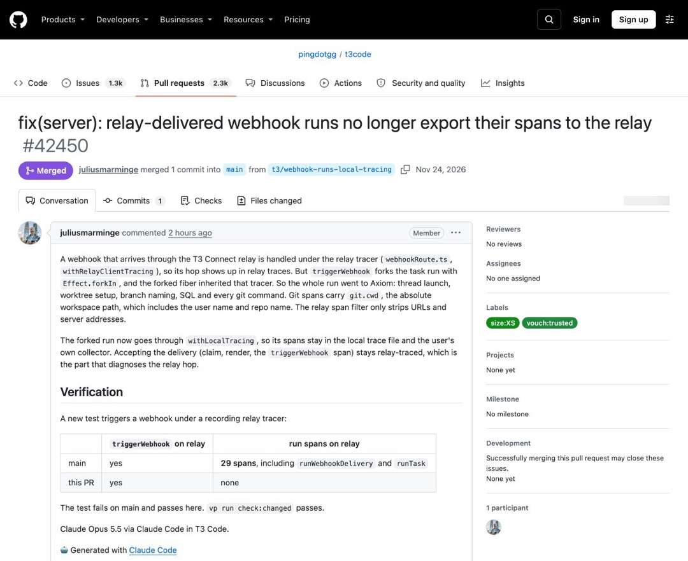
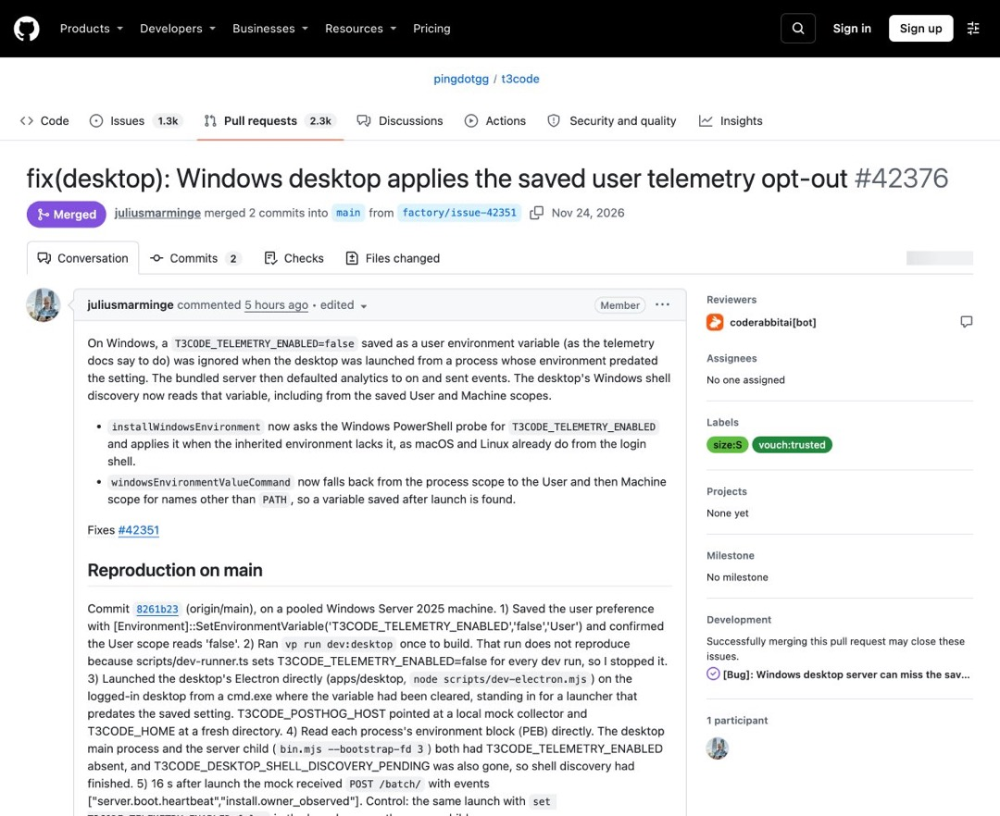
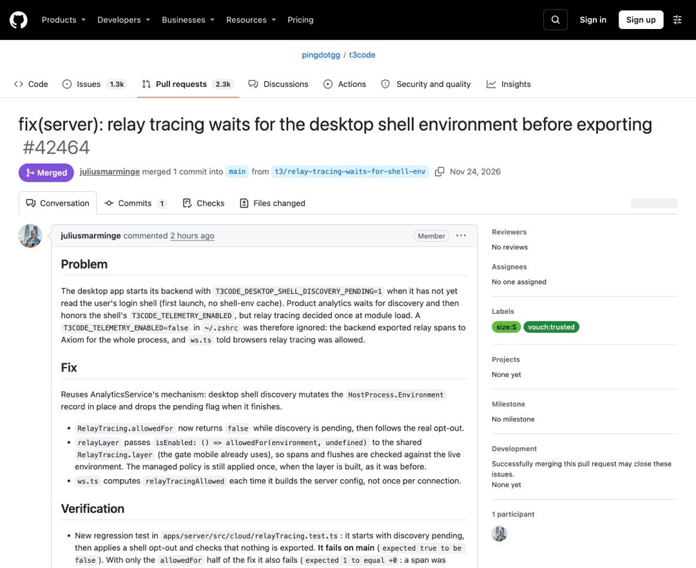
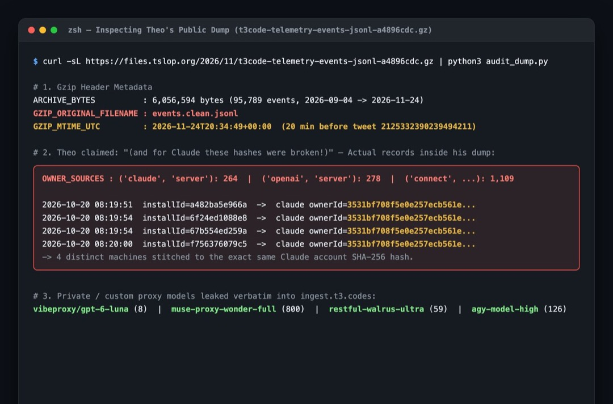
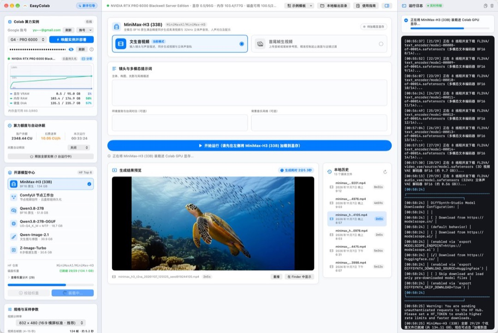
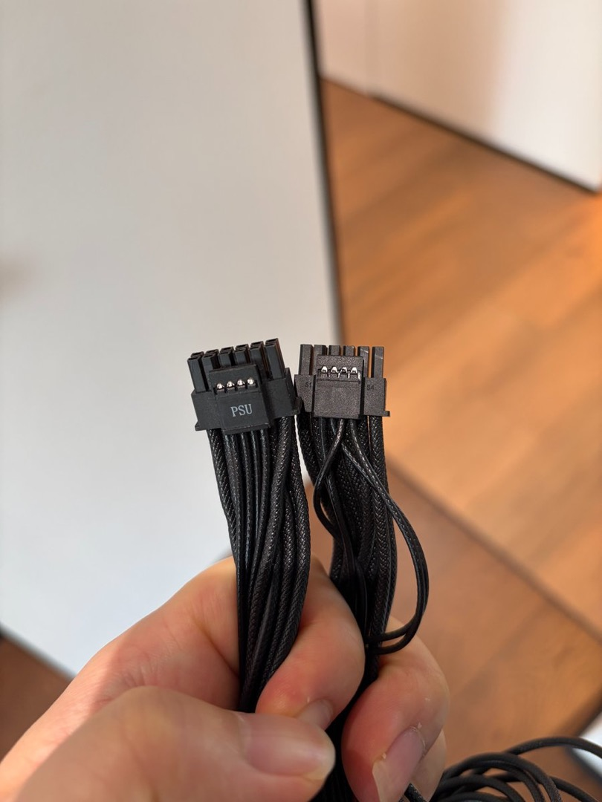

本期速览
01 pinescript 开源416份指标源码
02 T3 Code 补丁承认传出本机路径
03 Longbridge 全线迁移至 NSH
04 Ahrefs MCP 支持写入项目关键词
05 矩阵乘法指数 9/4 上界被证紧
07 12V-2x6 电源线插反致黑屏死机
01｜pinescript 开源416份指标源码
来源（X） · @_zheergen · 2026-11-25 13:47
从趋势滤波、动量分析到周期检测、统计计算，全部基于 Pine Script v6，还专门解决指标初始化和实时计算的稳定性问题！
pinescript，由 QuanTAlib 作者维护的一套专业 TradingView 技术指标与数学算法库。
它不只是收集常见指标，而是更注重计算公式是否正确、历史数据是否足够，以及指标在实时行情中能否稳定运行。
核心亮点：
1️⃣ 416 份指标源码：涵盖趋势、动量、波动率、成交量、统计分析等 16 大类别。
2️⃣ 高级趋势滤波：提供 FIR、IIR 滤波算法，研究均线平滑、价格噪声和趋势变化。
3️⃣ 周期与动量分析：包含周期检测、振荡器和反转指标，方便研究不同市场状态。
4️⃣ 数学统计工具：提供误差度量、数值计算、统计指标和价格变换算法。
5️⃣ 稳定性优化：明确指标初始化和预热规则，减少历史数据不足造成的计算偏差。
6️⃣ 完整源码文档：每个指标都有对应源码入口，支持提取函数、修改参数和二次开发。
我觉得最值得研究的是它对指标计算细节的处理。
很多指标看着名字一样，但初始化方式、滤波算法不同，最终信号可能差很多。
这套库把这些细节公开了，可以直接复制到 TradingView 的 Pine Editor，也能提取底层函数开发自己的指标。
做 TradingView、Pine Script、股票量化或技术指标开发的，这 416 份源码值得收藏！
GitHub：
https://github.com/mihakralj/pinescript

引用内容
爱吃折耳根的Ace @_zheergen
微软的因子挖掘、AI 策略训练、机构级回测和交易执行，已经有不少成熟的开源工具可以直接研究。
把下面这 6 个项目组合起来，基本能搭建一条完整的量化研究工作流：
市场研究 → 因子挖掘 → 策略开发 → 回测验证 → 交易执行。
我目前重点看这几个：
1️⃣ Microsoft RD-Agent｜约 15.4K Stars
https://github.com/microsoft/RD-Agent
微软的 AI 自动研究框架，让 Agent 自己提出因子、写代码、运行实验并优化研究结果。
2️⃣ Microsoft Qlib｜约 50.2K Stars
https://github.com/microsoft/qlib
完整的 AI 量化研究平台，金融数据处理、多因子研究、机器学习预测和组合回测都能做。
3️⃣ NautilusTrader｜约 31.4K Stars
https://github.com/nautechsystems/nautilus_trader
Rust + Python 构建的专业交易引擎，事件驱动架构，适合高性能回测及实盘系统开发。
4️⃣ FinRL-Trading｜约 4K Stars
https://github.com/AI4Finance-Foundation/FinRL-Trading
强化学习交易框架，研究 AI 如何通过训练学习交易决策和资产配置。
5️⃣ VectorBT｜约 9.8K Stars
https://github.com/polakowo/vectorbt
高性能 Python 回测工具，可以一次测试大量参数组合，快速比较策略收益与回撤。
6️⃣ QuantConnect LEAN｜约 22.6K Stars
https://github.com/QuantConnect/Lean
成熟的开源量化引擎，支持 Python、C#，覆盖策略回测、订单管理和实盘部署。
这几个项目里，我比较看好 RD-Agent + Qlib 的研究组合。
一个负责让 AI 自动挖掘因子和探索策略，一个负责模型训练、数据处理和回测验证。
如果想继续研究交易执行，可以再接入 NautilusTrader 或 LEAN，但数据和策略接口还需要自己适配。
它们不一定能直接拼成一套开箱即用的交易系统，但已经覆盖量化研究中很多重要环节。
做股票量化、AI Agent 或自动交易系统开发的，这 6 个项目值得收藏！

02｜T3 Code 补丁承认传出本机路径
来源（X） · @realchendahuang · 2026-11-25 09:03
T3Code创始人 @theo 今早发了篇澄清长文，拍胸脯向所有人保证三件事：
从未收过用户的文件路径、一直能用环境变量彻底关掉数据收集、Claude 的账号追踪本来就是坏的。
结果发帖前后不到两小时，他自己团队通宵合进去的补丁，并且自己高调晒出来100MB 数据包。
核心维护者 Julius 紧急合了一个补丁，在更新说明里亲口承认：
此前通过远程中继触发的自动化任务，会把整场运行的追踪记录全发往外部平台，里面直接带着用户电脑的绝对项目路径、系统用户名和仓库名。
他嘴上说一直能用环境变量轻松关掉，结果昨晚连夜补的两个补丁露馅了。
Windows 版以前根本不读用户配好的关闭开关，默认照样往外传；Mac 版首次打开时同样无视配置文件里的关闭设置，整次运行一直在偷传。
到这一秒为止，官方文档里教的另一组关闭变量在桌面端依然漏读不生效。
有老外在评论区当面追问，关掉数据收集后，软件启动时是不是还会往硬盘里写追踪文件。@theo 当场一口否认。但翻开此刻最新代码，软件一启动依然不看开关，照样往你电脑里写入本地追踪 ID，顺手把你关联的账号拿出来算一遍哈希。
他为了演坦荡，公开甩出了自己 100MB 的使用数据包，还强调 Claude 的账号追踪早就坏了。
结果把压缩包头一拆，里面的原始文件名叫清洗版，发推前 20 分钟刚洗过。
即便洗了一遍，里面还是躺着 264 条活生生的 Claude 账号追踪记录，4 台不同电脑全精准串到了同一个人身上，连他自己私下用的第三方代理模型名都原样漏了出来。
这人真是又蠢又坏。
参考证据：
@theo 澄清长文与公开否认写追踪文件原帖
https://x.com/theo/status/2125332390239494211
https://x.com/theo/status/2125370330244128924
发帖 90 分钟后维护者自供传出本机绝对路径与用户名（PR #42450）
https://github.com/pingdotgg/t3code/pull/42450
承认 Windows 与 Mac 桌面端此前无视环境变量关闭收集（PR #42376 / #42464）
https://github.com/pingdotgg/t3code/pull/42376
https://github.com/pingdotgg/t3code/pull/42464
此刻关掉遥测依然无条件往硬盘写追踪 ID 的最新源码
https://github.com/pingdotgg/t3code/blob/main/apps/server/src/telemetry/AnalyticsService.ts#L152




引用内容
Theo - t3.gg @theo
中文译文
1. 我之所以修改了这个，是因为我们一直在为新模型丢失事件。因为这个原因，我们连续3天没有收到任何一条能正确识别 Gemini 4 Neon 的日志。你可以在我自己的数据中看到这一点。
2. 如果我们能通过 CLI 获取唯一标识符，我们当初就会那样做。你在小题大做地分析被读取的文件名。只读取了一个 ID。它被哈希处理了。我们以前只是模糊地追踪"T3 Code 有多少用户"。你可以在源码中验证所有这些。
3. 情况并非如此，而且那些文件现在也不再被读取了。
4. 我已经详细解释过很多次了。这是具有误导性的，而且在连接到新环境时将无法正常工作。如果我们这样做，用户每次连接新环境时都会有遥测数据，他们会因此对我们大发雷霆。托管策略（Managed policy）才是正确的解决方案。
5. 我们会剥离 IP 地址。我们自行管理自己的管道以降低成本。将我们的网关开源会让它成为 DDoS 和其他攻击的过于容易的目标。如果其他人愿意付钱请第三方审计师来分析它，我对这种可能性持开放态度。
希望你能把你投入到这件事上的精力用在今后为我们辩护上，既然我已经澄清了你所有反对的方面 :)
原文
1. I changed this because we were constantly losing events for new models. We didn't get a single log that correctly identified Gemini 4 Neon for 3 days because of it. You can see that in my own data.
2. If we could have gotten a unique identifier via the CLI instead, we would have done that. You're catastrophizing the name of the file that was read. Only an ID was read. It was hashed. We used to vaguely track "how many users does T3 Code have". You can verify all of this in source
3. This is not the case and also those files aren't read anymore.
4. I've explained this in detail many times. It is misleading and will not work on new environments when connected. If we did this, users would have telemetry on whenever a new env connects and they will flame us for it. Managed policy is the correct solution.
5. We strip IP addresses. We manage our own pipeline to reduce costs. Open sourcing our gateway would make it far too easy a target for ddosing and other attacks. If someone else wants to pay a third party auditor to come in and analyze it, I would be open to the possibility.
I hope you use the energy you put into this in order to defend us going forward, now that I've clarified all of your areas of push back :)
03｜Longbridge 全线迁移至 NSH
来源（X） · @huacnlee · 2026-11-25 13:41
但随着 NSH 推进，目标完全改变了。我们发现 NSH 能力远不止于此。
它甚至能挑战我们以前客户端、前端的开发方式。
因此最近 Longbridge 的几乎所有客户端都在开始一点一点往 http://nsh.dev 推进迁移。那些原本 iOS、Android、GPUI 的项目，以及各类前端 SPA 应用，都在开始走 NSH 这条路。
我们甚至预测，未来有可能我们的前端、客户端 App 70% 都有可能是 NSH 开发的功能。
04｜Ahrefs MCP 支持写入项目关键词
来源（X） · @ahrefs · 2026-11-16 17:00
中文译文
🤖 你的 AI 工作流有两个更新：
→ MCP 现在可以写入了：直接从你的聊天中创建项目、关键词和 Brand Radar 提示词
→ APIv3 Link Intersect（企业版）：更多 Brand Radar 端点，查找链接到多达20个竞争对手但没有链接到你的网站
原文
🤖 Two updates for your AI workflows:
→ MCP can now write: create projects, keywords and Brand Radar prompts directly from your chat
→ APIv3 Link Intersect (Enterprise): more Brand Radar endpoints, find sites linking to up to 20 competitors but not you
05｜矩阵乘法指数 9/4 上界被证紧
来源（X） · @SebastienBubeck · 2026-11-25 09:33
中文译文
作为10月6日发布的一部分，我们在矩阵乘法指数上取得了一个特别干净的进展，新的上界为 9/4。从那以后，模型一直在研究这个指数的**下界**。这已经相当疯狂了，因为关于下界以前一无所知！今天我们宣布，实际上 9/4 是紧的……这真的是一种我从未想过能在有生之年看到的成果。
（顺便说一句，根据 Yin Tat Lee 及其合作者的一个"古老"结果，这也意味着线性规划可以在 n^{9/4} 时间内求解。）
原文
As part of the October 6 release we had a particularly clean advance on the matrix multiplication exponent, with a new upper bound of 9/4. Since then, the model has been working on a LOWER BOUND for this exponent. This is already pretty crazy since NOTHING was known for lower bounds! Today we announced that actually 9/4 is tight ... This is really the kind of result that I never thought I would see in my lifetime.
(btw, by an "old" result of Yin Tat Lee and collaborators this also implies that linear programs can be solved in time n^{9/4}.)
06｜easycolab 五平台 AI 工作台
来源（X） · @QingQ77 · 2026-11-25 13:19
https://github.com/wy51ai/easycolab
一款面向 macOS、Windows、Linux、iOS 和 Android 五大平台的原生 Google Colab 云端多模态 AI 工作台，默认适配 96 GB 显存的 G4 及 H100/A100/L4 实例。
一款面向 macOS、Windows、Linux、iOS 和 Android 五大平台的原生 Google Colab 云端多模态 AI 工作台，默认适配 96 GB 显存的 G4 及 H100/A100/L4 实例。

07｜12V-2x6 电源线插反致黑屏死机
来源（X） · @Blankwonder · 2026-11-25 13:11
如果你也是 ASUS 电源用户，也有遇到类似的问题，不妨检查下

引用内容
Yachen Liu @Blankwonder
我这台 Gaming PC，自从装好到现在，一直时不时出现黑屏死机，GPU 风扇拉满的问题，烦人的是没有任何手段可以稳定复现，压测跑一晚没事，而 Windows 桌面待机却会出现。另外系统日志里也没留下任何痕迹，只能靠盲猜去找原因，找 GPT 帮着查也全靠猜。
问题的发生概率也很奇怪，有时一个月都不出问题，有时一天出现几次，所以每次觉得找到了原因，几周后可能就打脸。目前已经更换验证的有：主板、机箱、显卡、内存、CPU。
也就是说仅仅还剩电源和 SSD 没换，这两天又开始出现问题，想起来 @imneway 曾经提到过因电源线老化导致过相似故障，但是我因为电源是新的所以当时没考虑。这次准备换一套电源排除下电源故障，然后就只剩 SSD 了。
结果换线的时候，我意外注意到 ROG Loki 的 12V-2x6 显卡电源线上，有一端印的是 PSU，我却是插在显卡端的，接反了。之前完全没注意到，因为两端接头是完全通用的，也能正常开机使用，而且 PSU 印在了内侧，不拔下来看不见。
于是让 GPT 去挖这个信息，还真发现 Reddit 上有和我完全一致的案例：https://www.reddit.com/r/buildapc/comments/1sj3icf/my_zotac_rtx_5070_asus_tuf_gaming_750w_gold_was/
不过由于 ASUS 没有公开过技术细节，无法确认逆向插到底会产生怎样的影响。
希望这次是真的找对原因了吧……